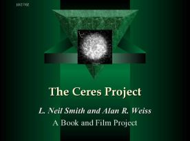

You are here: Webley Page > Announcements > The Ares Alliance
 |
P R E S S R E L E A S E
For Immediate Release
"The Ares Alliance Announces Grand Opening"
L. Neil Smith Book and Film Treatment Follows on Successful "Ceres Project" Model
Ft. Collins, Colorado and Austin, Texas—July 4, 2003—Building on the momentum of "The Ceres Project", which generated over $50,000 of working capital in only 2 1/2 months from Libertarians of every stripe and hue, the same team has announced "The Ares Alliance" to develop the follow-on book and film treatment based on L. Neil Smith's work in progress, Ares.
Smith, the most prolific and most successful living libertarian science fiction writer, has written over 23 books, won three (3) Prometheus Awards, and is rumored to be either a candidate for the Libertarian Party nomination for President in 2004. He is considered to be worth courting for his endorsement. A long-time Libertarian (including participation in the founding of the Party itself in the 1970's) and a staunch 2nd Amendment defender, Smith has promised to deliver his best work ever in Ceres and Ares, and vows to make a blockbuster film treatment suitable for major studio backing.
"We were so impressed by the response of individuals to "The Ceres Project", I felt we owed it to people to let them in on the big secret: while Ceres is a follow-on to Pallas (Smith's seminal tale of the struggle between libertarians and statists set on the asteroid Pallas), Ares fits between Pallas and Ceres and completes the epic tale", says noted author and creator L. Neil Smith. "I'm gratified by the response, absolutely astounded by the level of participation, and dedicated to turning out the best work of my life. I owe it to libertarians everywhere, and I owe it to the investors who put their faith and trust in me."
"The Ceres Project allowed ordinary libertarians and fans of L. Neil Smith to participate in the funding of the book and film treatment by creating an investment club", explained "Ceres Project" and "Ares Alliance" Chairman Alan R. Weiss. "By investing $5000, $2500, or as little as $1000, we gave individuals a way to share in building a libertarian future by creating a significant work of art, based on the known talent and track of record a real hero, L. Neil Smith", he stated. "We are going to use the same successful method of raising working capital with Ares, because in doing so we can go to the major publishers (and not just science fiction publishers) with a breakthrough book with major libertarian themes and persuade them that these are the books to publish. Nothing works with the book people like a proven, built-in market backed by real dollars, and we intend on promoting Ceres and Ares as major tier one properties", said Weiss. "The best part is that for "The Ares Alliance", we are dropping the lowest level to only $500!."
Just as with "The Ceres Project", participants in "The Ares Alliance" invest a certain amount of dollars, and agree to wait a certain period of time for the book and film treatment to be produced. These "deliverables" are then sold to a publisher and a film producer or studio for the highest bid, and each investor gets their principal returned as well as a percentage of the profits based on their level of investment. Participation may also include e-books, comic books, audio-books, and other media depending upon the level of investment. In case the deliverables are not sold, each investor is guaranteed by contract to receive at least their principal back. All of this is backed by the assets of the project itself.
Not many science fiction writers can actually create a new world populated by heroic, but real people—and convey a sense of dynamic ideas about society and technology that you would want the future to become. L. Neil Smith has done just that with Pallas, arguably his best book ever (until the upcoming Ceres, and Ares). Pallas tells the story of a child inventor who grows up to become a hero amidst the largely, but not exclusively, liberty-loving colony on Pallas asteroid. While the enemy is obvious, the plot twists and turns are not. In science-fiction, its the IDEAS that count, and this book rocks with them. As good a writer as Robert Heinlein and Fred Pohl, L. Neil Smith continues to push the frontiers of libertarianism and freedom. Both Ceres and Ares already have initial chapters and complete character outlines, as well as plot outlines done, and are available for review and inspection by interested investors after signing a standard non-disclosure agreement.
"Its true that I have taken at least one important concept from Ayn Rand: in order to sell liberty, you must paint a picture of a better tomorrow", disclosed the smiling Smith. "If you are going to fight a cultural war against statism, against totalitarianism, against the forces of regression, you have to have a culture. I think my books deliver the sort of culture that libertarians would love to live", he said.
More information on "The Ceres Project" can be found at http://www.lneilsmith.org/ceres-project.html
Information on "The Ares Alliance" can be found at http://www.lneilsmith.org/ares-alliance.html after the July 4, 2004 announcement kick-off date.
For more information, contact:
Alan R. Weiss, for
The Ares Alliance
512-219-0302, construct e-mail as: alan at ebenchmarks dot com
View the PowerPoint type Slide Show presentation here
Status Reports:
November 11, 2003: Ares Alliance Reaches Over Half-Way Mark
July 23, 2003: Ares Alliance Reaches $16,000 In Committed Funds
You are here: Webley Page > Announcements > The Ares Alliance
times since November 3, 2005.